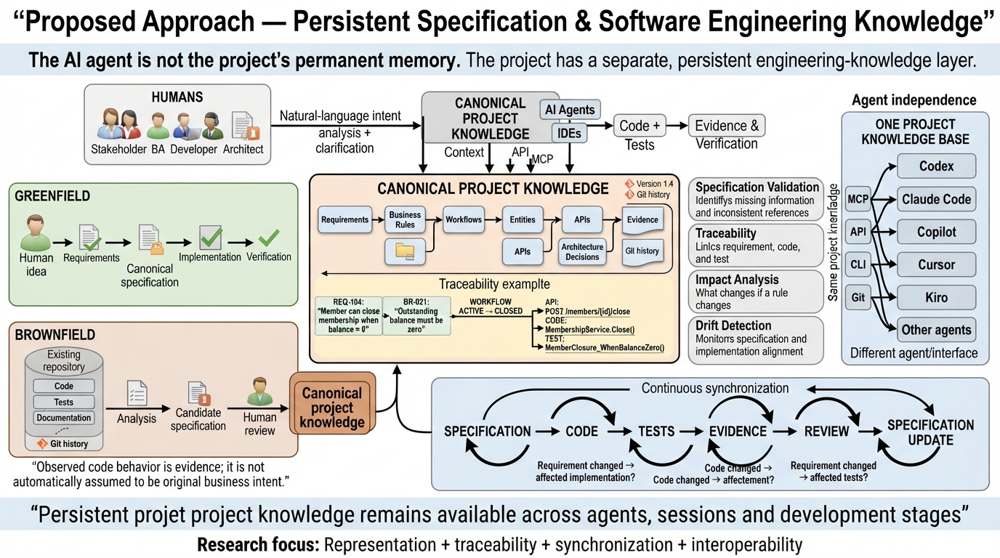

Record the decision
Store the requirement, its status, the people involved, and the reason behind the choice.
A WORKING PROJECT RECORD
Requirements change. Code changes. People leave. SpecCraft keeps the decisions, evidence, and open questions close enough to the code that the next person can follow them.
HOW IT WORKS

WHAT IS HERE
Store the requirement, its status, the people involved, and the reason behind the choice.
Scan a brownfield repository and mark what was observed separately from what was inferred.
Compare file hashes and project records so a change can be reviewed while it is still small.
Give a person or tool the relevant requirement, symbols, links, and evidence instead of the whole repository.
Spec Kit, OpenSpec, Ollama, and other providers are selected through configuration.
Local adapters are working references. Managed storage, identity, queues, and security review still need deployment work.
THE PROBLEM
A ticket describes a change. The repository shows what was built. The useful explanation sits between them.
A written plan is valuable, but it cannot by itself explain an older codebase or prove that the implementation still matches the plan.
SpecCraft treats those connections as project data that can be inspected and reviewed.
It does not replace Git, an issue tracker, or a coding tool. It gives them a shared record of why the work exists and what supports it.
TRY THE WORKING EXAMPLE
Calculating impact...
Compiled task context
Loading context...
NEXT STEPS
Requirements, decisions, links, evidence, and review status come first.
Use durable revisions, audit records, and a clear conflict model.
Add full parsers, incremental scans, and measured support for large codebases.
Add managed identity, secret storage, queues, rate limits, and independent security testing.